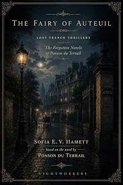

La Fée d'Auteuil
A novel of the new Paris
by Pierre-Alexis Ponson du Terrail · translated by Sofia E. V. Hamettpar Pierre-Alexis Ponson du Terrail · traduit par Sofia E. V. Hamett
The bookLe livre
"Paris has become very small since it got so big." Ten years ago you took precautions before setting off from the boulevard Montmartre for Auteuil — an umbrella if you lived on your investments, a mackintosh if you painted. Today half a cigar sees you to the parc des Princes. A novel about the city Haussmann was making, and the people it was making room for.
« Paris est devenu tout petit depuis qu'il est si grand. » Il y a dix ans, on prenait ses précautions avant de partir du boulevard Montmartre pour Auteuil : un parapluie si l'on vivait de ses rentes, un caoutchouc si l'on était peintre. Aujourd'hui, un demi-cigare suffit à vous mener au parc des Princes. Un roman sur la ville que faisait Haussmann, et sur ceux à qui elle faisait de la place.
From the opening pagesLes premières pages
Wolf Traps in the Park
Paris has become very small since it got so big.
Ten years ago, when you set off from the boulevard Montmartre for Auteuil, you did not perhaps make your will first, but you took precautions. In the month of June a man living on his investments armed himself with an umbrella; a painter took his mackintosh. Today half a cigar is all that lies between you and the parc des Princes.
So, then: one morning in June two years ago, as six o’clock struck at Saint-Philippe-du-Roule, a young man was going at a brisk trot along the end of the rue de Morny where there are actually houses to be found — which is to say between the faubourg Saint-Honoré and the Champs-Élysées. When he came to cross that last thoroughfare, which at such an hour is mercifully empty, he stopped all the same, and looked as anxious as a man up from the country stranded in the middle of the carrefour Drouot.
The reason for his anxiety may have been the arrival of one of those carriages they call skeletons, in which the horse-dealers harness the green horse they want to school alongside an old schoolmaster. The team was driven by a young man dressed all in white with a panama hat on his head. Behind the seat, standing on the footboards, two more young men appeared to be following the action of the horses closely; they were superb steppers, burnt chestnut.
The pedestrian arriving at the corner of the rue de Morny tried to make himself small, and failed: the three young men spotted him and could not hold back a shout of surprise, while the one with the reins pulled up.
“Morning, baron!” they called.
Seeing himself recognised, the pedestrian came forward.
“Morning, my dears,” he answered.
“But what on earth are you doing on foot on the Champs-Élysées at six in the morning?” said the one holding the reins, laughing.
“Taking the air.”
“Going home?”
“No. Going out.”
“On foot? You live in the rue du Helder, don’t you?”
“I came the whole length of the boulevard Haussmann as far as the rue de la Pépinière.”
“Baron, my friend,” said one of the other two young men, “as sure as my name is Léon de Courtenay, you are as mysterious as the hero of a novel.”
“Hero, no. Mysterious, perhaps,” said the young man, laughing. “Give me a light, Arthur, I’ve let my cigar go out.”
“My dear fellow,” said the figure in white, holding out his own cigar, “you are in love, aren’t you?”
“Perhaps.”
“And off to sigh under a balcony?”
“Perhaps again. Goodbye, gentlemen, and thank you.”
With that the Baron Morgan raised his hat, crossed the Champs-Élysées and went on his way towards the Trocadéro.
He was a man of twenty-eight or thirty, of middle height, fair, slight, good-looking, exceedingly well turned out, as finished an article as a romantic woman could dream of. He walked lightly, his eyes lost in that horizon of blue haze that floods Paris on a summer morning, and seemed, for all that, in no great hurry to arrive.
The three young men in the skeleton had stopped out of curiosity, and the one he had called Arthur muttered, “God damn me if I know where he can be going.”
“I shall know,” said Monsieur Léon de Courtenay.
A rise in the ground soon took the baron out of their sight, and the skeleton set off again towards the Arc de Triomphe.
The baron walked on. At the Trocadéro, lately rebuilt, instead of taking the quay he went up towards Passy, followed the main street, passed the railway station, took the boulevard Beauséjour and did not stop until he reached the corner of the rue de l’Ascension. There he threw away his cigar and turned down a narrow lane between hedges and board fences which is, in the middle of Paris, the most secluded corner in the world.
Auteuil has its mysteries of leaf and flower, its green hiding places known only to the initiated. Between the rue de l’Ascension and the rue de la Source lie a hundred acres cut by sunken lanes, roofed with tall trees, scattered with pretty white houses like the cottages of Montmorency and the lake of Enghien. It was into this flowering maze that the baron turned.
Who was the woman, angel or fairy, for whom he was so cheerfully soaking his shoes in the morning dew?
A little above the rue de la Source he took a small path with the traditional notice at the entrance to it — Building land for sale — slipped along a hedge as far as a fine lordly gate that carried a notice of its own — There are wolf traps in the park — and stopped again.
He had in fact arrived at the gate of a park, if you can give that name to a handsome garden planted with tall trees and covered with flowers, in the middle of which stood a charming house of brick and stone with an Italian terrace, every shutter closed: clear proof that the owners of this pretty place were still deep asleep.
So our young man sat down on the low wall beneath the railings and began to brood over the white villa with a lover’s eye. Under that roof, no doubt, the fairy slept.
He looked at his watch. Seven o’clock. From a slight frown he could not repress you might have concluded that the baron found his fairy lazier than usual.
She will have gone to that charity ball last night, he thought.
And he gave one of those good deep sighs that lift the chest of the convinced lover.
And as he sat obstinately fixing his eyes on those motionless blinds, a voice rang out ten paces from him. A carrying voice, faintly amused at its own frankness, which said, “My dear baron, have you not read that there are wolf traps in the park?”
The baron turned round, pale, dumb, the blood in his face. A man in a jacket of striped ticking and white shoes, with a velvet cap on his head, had just shown himself between two clumps of laburnum on the other side of the railings.
“Monsieur de Valserres!” the baron stammered.
“A father who watches over his daughter as a dragon watches over treasure, my dear baron,” the newcomer answered, smiling. He was a man of barely forty-three or forty-four.
And as the baron grew more and more embarrassed, he added, still laughing, “Follow the railings along to that little door down there, and I shall open it for you. We’ll have a word, Monsieur Casanova.”
And indeed, when the baron had followed the railings, he saw the little door open, and Monsieur de Valserres took him by the arm and said, “Come in. There are wolf traps, but I know where they are and I shall point them out in good time so that you don’t fall into one. For thieves of your sort, my dear baron, we need something more serious.”
Bantering in this way, he drew him along to a leafy arbour and sat him down there on a rustic bench beside a table with newspapers on it and a box of cigars; and then he said, “Take a cigar and let’s talk, baron. So you are in love with my daughter?”
The excerpt ends here — about 1,242 words of the published edition.L'extrait s'arrête ici — environ 1,242 mots de l’édition parue.
KindlePaperbackBrochéContextContexte
Rocambole made Ponson du Terrail famous and then swallowed the rest of his work. He wrote dozens of other novels — the Second Empire demi-monde, forest melodramas, police memoirs, Regency intrigue, Orientalist serials — and almost none of them survived in English. Lost French Thrillers recovers them, in the order they can be edited, with the same care given to the Rocambole cycle.
Rocambole a rendu Ponson du Terrail célèbre, puis a englouti le reste de son œuvre. Il a écrit des dizaines d'autres romans — le demi-monde du Second Empire, des mélodrames forestiers, des mémoires de police, des intrigues de la Régence, des feuilletons orientalistes — et presque aucun n'a survécu en anglais. Lost French Thrillers les exhume, dans l'ordre où ils peuvent être établis, avec le soin donné au cycle de Rocambole.
The whole programmeTout le programme